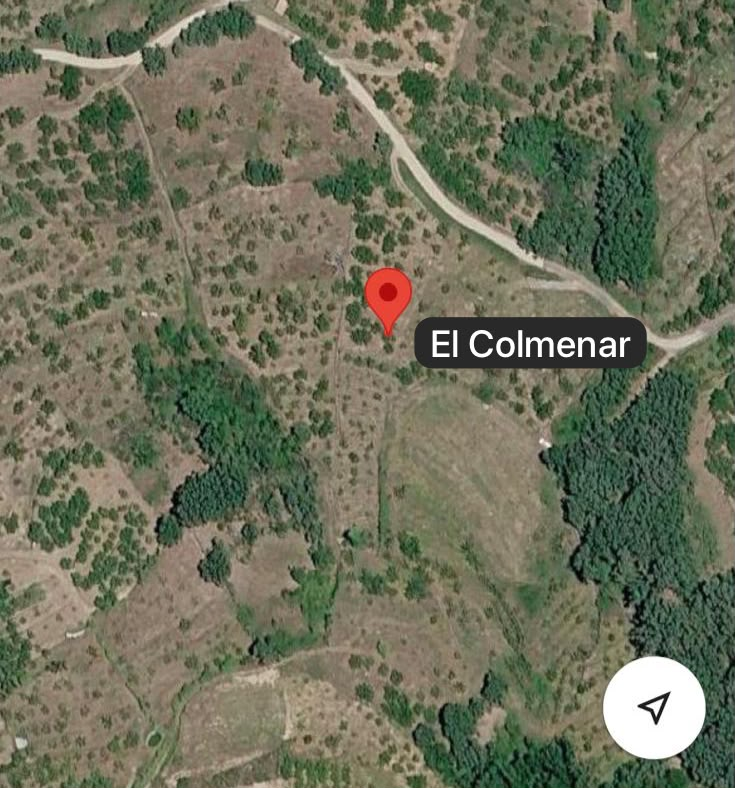
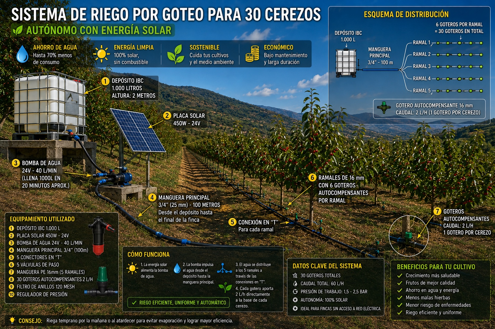

📐
Preparar proyecto
Abre la calculadora V10 con sus campos completos para caudal, tuberías, desnivel, presión, horas solares, rendimiento y batería.
FincaSinRed te ayuda a entender tu finca, preparar una instalación y tomar decisiones antes de comprar. La información se relaciona con lo que realmente se ve en la imagen.


Menos información genérica y más datos útiles para tu finca concreta.
Abre la calculadora V10 con sus campos completos para caudal, tuberías, desnivel, presión, horas solares, rendimiento y batería.
Selecciona varias fotografías desde el móvil u ordenador y visualízalas antes de continuar.
Guarda observaciones sobre terreno, accesos, agua, pendientes o cualquier detalle que quieras recordar.
Un vistazo a cómo relacionamos la fotografía con datos útiles.
La foto muestra una parcela arbolada con líneas de riego; por eso destacamos distribución, ramales, caudal y tuberías, no datos ajenos a la imagen.
La selección se muestra inmediatamente en pantalla.
Ejemplo de cómo relacionamos la fotografía de la finca con datos útiles.